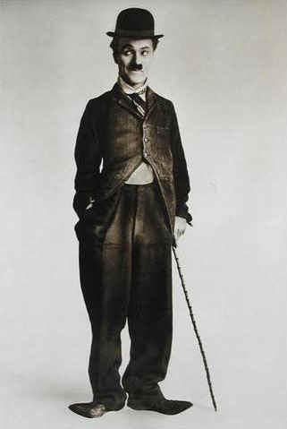
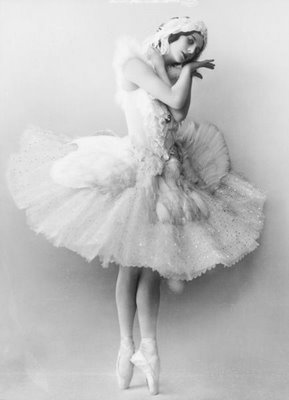

Organic in this context seems to refer to a
process that is indivisible into time fragments. Xeno's paradox illustrates that time
itself in indivisible.
Organic also refers to structure. Organic growth implies synchronized
growth of a whole interconnected organism or entity from within, i.e. constitutionally,
rather than by external accretion.
An Interdependency of parts the loss of any one of which would diminish
the integrity of the whole.
In England
the movie theater was originally called "The Bioscope," because of its visual
presentation of the actual movements of the forms of life (from Greek bios, way of
life). The movie, by which we roll up the real world on a spool in order to unroll it as a
magic carpet of fantasy, is a spectacular wedding of the old mechanical technology and the
new electric world. In the chapter on The Wheel, the story was told of how the movie had a
kind of symbolic origin in an attempt to photograph the flying hooves of galloping horses,
for to set a series of cameras to study animal movement is to merge the mechanical and the
organic in a special way. In the medieval world, curiously, the idea of change in organic
beings was that of the substitution of one static form for another, in sequence. They
imagined the life of a flower as a kind of cinematic strip of phases or essences. The
movie is the total realization of the medieval idea of change, in the form of an
entertaining illusion. Physiologists had very much to do with the development of film, as
they did with the telephone. On film the mechanical appears as organic, and the growth of
a flower can be portrayed as easily and as freely as the movement of a horse.
A Man in Armor
If the movie
merges the mechanical and organic in a world of undulating forms, it also links with the
technology of print. The reader in projecting words, as it were, has to follow the black
and white sequences of stills that is typography, providing his own sound track. He tries
to follow the contours of the author's mind, at varying speeds and with various illusions
of understanding. It would be difficult to exaggerate the bond between print and movie in
terms of their power to generate fantasy in the viewer or reader. Cervantes devoted his Don
Quixote entirely to this aspect of the printed word and its power to create what James
Joyce throughout Finnegans Wake designates as "the ABCED-minded," which
can be taken as "ab-said" or "ab-sent," or just alphabetically
controlled.
Don Quixote, shining knight with sauce pan helmet, was the archetype of deluded
romanticism and fantasy.
The business
of the writer or the film-maker is to transfer the reader or viewer from one world, his own,
to another, the world created by typography and film. That is so obvious, and happens
so completely, that those undergoing the experience accept it subliminally and without
critical awareness. Cervantes lived in a
world in which print was as new as movies are in the West, and it seemed obvious to him
that print, like the images now on the screen, had usurped the real world. The reader or
spectator had become a dreamer under their spell, as Rene Clair said of film in 1926.
Idle fancy is not in fact idle, but preliminary
to action. Just as play is the forerunner of the hunt, fantasy served as a laboratory for
problem solving, a kind of mental scratchpad for thought experiments. But with the advent
of print, rather than solving problems in the real world, a hyperactivated fancy became a
substitute for reality itself.
Movies as a
nonverbal form of experience are like photography, a form of statement without syntax. In
fact, however, like the print and the photo, movies assume a high level of literacy in
their users and prove baffling to the nonliterate. Our literate acceptance of the mere
movement of the camera eye as it follows or drops a figure from view is not acceptable to
an African film audience. If somebody disappears off the side of the film, the African
wants to know what happened to him. A literate audience, however, accustomed to following
printed imagery line by line without questioning the logic of lineality, will accept film
sequence without protest.
Understanding the grammar of modern film
conventions is a challenge even for Western viewers. The sequencing of action in the movie
The End of the Affair, baffles many and to 'get it' often requires a second
viewing of the film.
The mythic quality of black and white films. Monochromatic Chinese
watercolors have a similar dreamy quality.
It was Rene
Clair who pointed out that if two or three people were together on a stage, the dramatist
must ceaselessly motivate or explain their being there at all. But the film audience, like
the book reader, accepts mere sequence as rational. Whatever the camera turns to, the
audience accepts. We are transported to
another world. As Rene Clair observed, the screen opens its white door into a harem
of beautiful visions and adolescent dreams, compared to which the loveliest real body
seems defective. Yeats saw the movie as a
world of Platonic ideals with the film projector playing "a spume upon a ghostly
paradigm of things." This was the world that haunted Don Quixote, who found it
through the folio door of the newly printed romances.
Western viewers betray vestiges of a similar naiveté. Watching a
professional wrestling match for the first time, they are shocked by the brutality of the
sport, until they realize it is all calculated for effect.
The close
relation, then, between the reel world of film and the private fantasy experience of the
printed word is indispensable to our Western acceptance of the film form. Even the film
industry regards all of its greatest achievements as derived from novels, nor is this
unreasonable. Film, both in its reel form and in its scenario or script form, is
completely involved with book culture. All one need do is to imagine for a moment a film
based on newspaper form in order to see how close film is to book. Theoretically, there is
no reason why the camera should not be used to photograph complex groups of items and
events in dateline configurations, just as they are presented on the page of a newspaper.
Actually, poetry tends to do this configuring or "bunching" more than prose.
Symbolist poetry has much in common with the mosaic of the newspaper page, yet very few people can detach themselves from uniform and
connected space sufficiently to grasp symbolist poems. Natives, on the other hand,
who have very little contact with phonetic literacy and lineal print, have to learn to
"see" photographs or film just as much as we have to learn our letters. In fact,
after having tried for years to teach Africans their letters by film, John Wilson of
London University's African Institute found it easier to teach them their letters as a
means to film literacy. For even when natives have learned to "see" pictures,
they cannot accept our ideas of time and space "illusions." On seeing Charlie
Chaplin's The Tramp, the African audience concluded that Europeans were magicians
who could restore life. They saw a character who survived a mighty blow on the head
without any indication of being hurt. When the camera shifts, they think they see trees
moving, and buildings growing or shrinking, because they cannot make the literate
assumption that space is continuous and uniform. Nonliterate people simply don't get
perspective or distancing effects of light and shade that we assume are innate human
equipment. Literate people think of cause and
effect as sequential, as if one thing pushed another along by physical force. Nonliterate
people register very little interest in this kind of "efficient" cause and
effect, but are fascinated by hidden forms that produce magical results. Inner,
rather than outer, causes interest the nonliterate and nonvisual cultures. And that is why
the literate West sees the rest of the world as caught in the seamless web of
superstition.
McLuhan once maintained that he only read the right page of a book, skipping the left
page, because there was so much redundancy in serious writing, and that this
prompted him to actively participate by filling in the blanks or lacuna.
Like the
oral Russian, the African will not accept sight and sound together. The talkies were the
doom of Russian film-making because, like any backward or oral culture, Russians have an
irresistible need for participation that is defeated by the addition of sound to the
visual image. Both Pudovkin and Eisenstein denounced the sound film but considered that if
sound were used symbolically and contrapuntally, rather than realistically, there would
result less harm to the visual image. The African insistence on group participation and on
chanting and shouting during films is wholly frustrated by sound track. Our own talkies
were a further completion of the visual package as a mere consumer commodity. For with silent film we automatically provide sound
for ourselves by way of "closure" or completion. And when it is filled in
for us there is very much less participation in the work of the image.
A 'hot' experience like a talkie is packaged, a
'cool' medium like silent film, requires that we fill-in, i.e. participate.
McLuhan's claim that perspective and Euclidean three-dimensional space are learned from
reading print rather than instinctive is not entirely convincing. Wouldn't preverbal
tribal hunters have used perspective to aim their arrows and spears?
Again, it
has been found that nonliterates do not know how to fix their eyes, as Westerners do, a
few feet in front of the movie screen, or some distance in front of a photo. The result is
that they move their eyes over photo or screen as they might their hands. It is this same
habit of using the eyes as hands that makes European men so "sexy" to American
women. Only an extremely literate and abstract society learns to fix the eyes, as we must
learn to do in reading the printed page. For those who thus fix their eyes, perspective
results. There is great subtlety and
synesthesia in native art, but no perspective. The old belief that everybody really
saw in perspective, but only that Renaissance painters had learned how to paint it, is
erroneous. Our own first TV generation is rapidly losing this habit of visual perspective
as a sensory modality, and along with this change comes an interest in words, not as visually uniform and
continuous, but as unique worlds in depth. Hence the craze for puns and word-play,
even in sedate ads.
Puns arrest the sequential flow of thought with
binary meaning.
In Conrad's novel, The Secret Agent, and in Dickens's novel, Bleak
House, London is a symbol and a character.
In terms of
other media such as the printed page, film has the power to store and to convey a great
deal of information. In an instant it presents a scene of landscape with figures that
would require several pages of prose to describe. In the next instant it repeats, and can
go on repeating, this detailed information. The writer, on the other hand, has no means of
holding a mass of detail before his reader in a large bloc or gestalt. As the
photograph urged the painter in the direction of abstract, sculptural art, so the film has
confirmed the writer in verbal economy and depth symbolism where the film cannot rival
him.
"The idea of the parallel is
everywhere in Dickens's notes. In August 1862, about to begin work on Our Mutual
Friend, he remarked to Forster about his germinating idea of structure: 'bringing
together two strongly contrasted places and two strongly contrasted sets of people with
which and with whom the story is to rest, through the agency of an electric
message*.'" –Adam Thirlwell, The New
Republic, Dec. 2009
–––––––––––––––––––
* The Morse telegraph was invented in 1837.
Another dramatic example of
parallelism in Dickens is the title and conception of A Tale of Two Cities.
"It was the best of times; it was the worst of times."
Cyrano de Bergerac
Another
facet of the sheer quantity of data possible in a movie shot is exemplified in historical
films like Henry V or Richard III. Here extensive research went into the
making of the sets and costumes that any six-year-old can now enjoy as readily as any
adult. T. S. Eliot reported how, in the making of the film of his Murder in the
Cathedral, it was not only necessary to have costumes of the period, but—so great
is the precision and tyranny of the camera eye—these costumes had to be woven by the
same techniques as those used in the twelfth century. Hollywood, amidst much illusion, had
also to provide authentic scholarly replicas of many past scenes. The stage and TV can
make do with very rough approximations, because they offer an image of low definition that
evades detailed scrutiny.
At first,
however, it was the detailed realism of writers like Dickens that inspired movie pioneers
like D. W. Griffiths, who carried a copy of a Dickens novel on location. The realistic
novel, that arose with the newspaper form of communal
cross-section and human-interest coverage in the eighteenth century, was a complete
anticipation of film form. Even the poets took up the same panoramic style, with human
interest vignettes and close-ups as variant. Gray's Elegy, Burns' The Cotter's
Saturday Night, Wordsworth's Michael, and Byron's Childe Harold are all
like shooting scripts for some contemporary documentary film.
"The
kettle began it. . . ." Such is the opening of Dickens' Cricket and the Hearth. If
the modern novel came out of Gogol's The Overcoat, the modern movie, says
Eisenstein, boiled up out of that kettle. It should be plain that the American and even
British approach to film is much lacking in that free interplay among the senses and the
media that seems so natural to Eisenstein or Rene Clair. For the Russian, especially, it
is easy to approach any situation structurally, which is to say, sculpturally. To Eisenstein, the overwhelming fact of film was
that it is an "act of juxtaposition." But to a culture in an extreme
reach of typographic conditioning, the juxtaposition must be one of uniform and connected
characters and qualities. There must be no
leaps from the unique space of the tea kettle to the unique space of the kitten or the
boot. If such objects appear, they must be leveled off by some continuous
narrative, or be "contained" in some uniform pictorial space. All that Salvador
Dali had to do to create a furor was to allow the chest of drawers or the grand piano to
exist in its own space against some Sahara or Alpine backdrop. Merely by releasing objects from the uniform
continuous space of typography we got modern art and poetry. We can measure the
psychic pressure of typography by the uproar generated by that release. For most people,
their own ego image seems to have been typographically conditioned, so that the electric
age with its return to inclusive experience threatens their idea of self. These are the
fragmented ones, for whom specialist toil renders the mere prospect of leisure or jobless
security a nightmare. Electric simultaneity ends specialist learning and activity, and
demands interrelation in depth, even of the personality.

Charlie Chaplin

Anna Pavlova
The case of
Charlie Chaplin films helps to illumine this problem. His Modern Times was taken to
be a satire on the fragmented character of modern tasks. As clown, Chaplin presents the
acrobatic feat in a mime of elaborate incompetence, for any specialist task leaves out
most of our faculties. The clown reminds us of our fragmented state by tackling acrobatic
or special jobs in the spirit of the whole or integral man. This is the formula for
helpless incompetence. On the street, in social situations, on the assembly line, the
worker continues his compulsive twitchings with an imaginary wrench. But the mime of this
Chaplin film and others is precisely that of the robot, the mechanical doll whose deep
pathos it is to approximate so closely to the condition of human life. Chaplin, in all his
work, did a puppetlike ballet of the Cyrano de Bergerac kind. In order to capture this
puppetlike pathos, Chaplin (a devotee of ballet and personal friend of Pavlova) adopted
from the first the foot postures of classical ballet. Thus he could have the aura of Spectre
de la Rose shimmering around his clown getup. From the British music hall, his first
training ground, with a sure touch of genius he took images like that of Mr. Charles
Footer, the haunting figure of a nobody. This
shoddy-genteel image he invested with an envelope of fairy romance by means of adherence
to the classic ballet postures. The new film form was perfectly adapted to this
composite image, since film is itself a jerky mechanical ballet of flicks that yields a
sheer dream world of romantic illusions. But the film form is not just a puppetlike dance
of arrested still shots, for it manages to approximate and even to surpass real life by
means of illusion. That is why Chaplin, in his silent pictures at least, was never tempted
to abandon the Cyrano role of the puppet who could never really be a lover. In this
stereotype Chaplin discovered the heart of the film illusion, and he manipulated that
heart with easy mastery, as the key to the
pathos of a mechanized civilization. A mechanized world is always in the process of
getting ready to live, and to this end it brings to bear the most appalling pomp of skill
and method and resourcefulness.
The film
pushed this mechanism to the utmost mechanical verge and beyond, into a surrealism of
dreams that money can buy. Nothing is more congenial to the film form than this pathos of
superabundance and power that is the dower of a puppet for whom they can never be real.
This is the key to The Great Gatsby that reaches its moment of truth when Daisy
breaks down in contemplating Gatsby's superb collection of shirts. Daisy and Gatsby live
in a tinsel world that is both corrupted by power, yet innocently pastoral in its
dreaming.
The movie is
not only a supreme expression of mechanism, but paradoxically it offers as product the
most magical of consumer commodities, namely dreams. It is, therefore, not accidental that
the movie has excelled as a medium that offers poor people roles of riches and power
beyond the dreams of avarice. In the chapter on The Photograph, it was pointed out how the
press photo in particular had discouraged the really rich from the paths of conspicuous
consumption. The life of display that the
photo had taken from the rich, the movie gave to the poor with lavish hand:
Oh, lucky, lucky me,
I shall live in luxury,
For I've got a pocketful of dreams.
The
Hollywood tycoons were not wrong in acting on the assumption that movies gave the American
immigrant a means of self-fulfillment without any delay. This strategy, however deplorable
in the light of the "absolute ideal good," was perfectly in accord with film
form. It meant that in the 1920s the American way of life was exported to the entire world
in cans. The world eagerly lined up to buy canned dreams. The film not only accompanied
the first great consumer age, but was also incentive, advertisement and, in itself, a
major commodity. Now in terms of media study it is clear that the power of film to store
information in accessible form is unrivaled. Audio tape and video tape were to excel film
eventually as information storehouses. But film remains a major information resource, a
rival of the book whose technology it did so much to continue and also to surpass. At the
present time, film is still in its manuscript phase, as it were; shortly it will, under TV
pressure, go into its portable, accessible, printed-book phase. Soon everyone will be able to have a small,
inexpensive film projector that plays an 8-mm sound cartridge as if on a TV screen.
This type of development is part of our present technological implosion. The present
dissociation of projector and screen is a vestige of our older mechanical world of
explosion and separation of functions that is now ending with the electrical implosion.
Typographic man took readily to film just because,
like books, it offers an inward world of fantasy and dreams. The film viewer sits
in psychological solitude like the silent book reader. This was not the case with the
manuscript reader, nor is it true of the watcher of television. It is not pleasant to turn
on TV just for oneself in a hotel room, nor even at home. The TV mosaic image demands
social completion and dialogue. So with the manuscript before typography, since manuscript
culture is oral and demands dialogue and debate, as the entire culture of the ancient and
medieval worlds demonstrates. One of the major pressures of TV has been to encourage the
"teaching machine." In fact, these devices are adaptations of the book in the
direction of dialogue. These teaching machines are really private tutors, and their being
misnamed on the principle that produced the names "wireless" and "horseless
carriage" is another instance in that long list that illustrates how every innovation
must pass through a primary phase in which the new effect is secured by the old method,
amplified or modified by some new feature.
Film is not
really a single medium like song or the written word, but a collective art form with
different individuals directing color, lighting, sound, acting, speaking. The press, radio
and TV, and the comics are also art forms dependent upon entire teams and hierarchies of
skill in corporate action. Prior to the movies, the most obvious example of such corporate
artistic action had occurred early in the industrialized world, with the large new
symphony orchestras of the nineteenth century. Paradoxically, as industry went its ever
more specialized fragmented course, it demanded more and more teamwork in sales and
supplies. The symphony orchestra became a major expression of the ensuing power of such
coordinated effort, though for the players themselves this effect was lost, both in the
symphony and in industry.
When the
magazine editors recently introduced film scenario procedures to the constructing of idea
articles, the idea article supplanted the short story. The film is the rival of the book
in that sense. (TV in turn is the rival of the magazine because of its mosaic power.)
Ideas presented as a sequence of shots or pictorialized situations, almost in the manner
of a teaching machine, actually drove the short story out of the magazine field.
Hollywood
has fought TV mainly by becoming a subsidiary of TV. Most of the film industry is now
engaged in supplying TV programs. But one new strategy has been tried, namely the
big-budget picture. The fact is that Technicolor is the closest the movie can get to the
effect of the TV image. Technicolor greatly lowers photographic intensity and creates, in
part, the visual conditions for participant viewing. Had Hollywood understood the reasons
for Marty's success, TV might have given us a revolution in film. Marty was
a TV show that got onto the screen in the form of low definition or low-intensity visual
realism. It was not a success story, and it had no stars, because the low-intensity TV
image is quite incompatible with the high-intensity star image. Marty, which in
fact looked like an early silent movie or an old Russian picture, offered the film
industry all the clues it needed for meeting the TV challenge.
This kind of
casual, cool realism has given the new British films easy ascendancy. Room at the Top features
the new cool realism. Not only is it not a success story, it is as much an announcement of
the end of the Cinderella package as Marilyn Monroe was the end of the star system. Room
at the Top is the story of how the higher a monkey climbs, the more you see of his
backside. The moral is that success is not only wicked but also the formula for misery. It
is very hard for a hot medium like film to accept the cool message of TV. But the Peter
Sellers movies I'm All Right, Jack and Only Two Can Play are perfectly in
tune with the new temper created by the cool TV image. Such is also the meaning of the
ambiguous success of Lolita. As a novel, its acceptance announced the antiheroic
approach to romance. The film industry had long beaten out a royal road to romance in
keeping with the crescendo of the success story. Lolita announced that the royal
road was only a cowtrack, after all, and as for success, it shouldn't happen to a dog.
In the
ancient world and in medieval times, the most popular of all stories were those dealing
with The Falls of Princes. With the coming of the very hot print medium, the
preference changed to a rising rhythm and to tales of success and sudden elevation in the
world. It seemed possible to achieve anything by the new typographic method of minute,
uniform segmentation of problems. It was by this method, eventually, that film was made.
Film was, as a form, the final fulfillment of the great potential of typographic
fragmentation. But the electric implosion has now reversed the entire process of expansion
by fragmentation. Electricity has brought back the cool, mosaic world of implosion,
equilibrium, and stasis. In our electric age,
the one-way expansion of the berserk individual on his way to the top now appears as a
gruesome image of trampled lives and disrupted harmonies. Such is the subliminal
message of the TV mosaic with its total field of simultaneous impulses. Film strip and
sequence cannot but bow to this superior power. Our own youngsters have taken the TV
message to heart in their beatnik rejection of consumer mores and of the private success
story.
Since the
best way to get to the core of a form is to study its effect in some unfamiliar setting,
let us note what President Sukarno of Indonesia announced in 1956 to a large group of
Hollywood executives. He said that he regarded them as political radicals and
revolutionaries who had greatly hastened political change in the East. What the Orient saw
in a Hollywood movie was a world in which all the ordinary people had cars and
electric stoves and refrigerators. So the Oriental now regards himself as an ordinary
person who has been deprived of the ordinary man's birthright.
Product placement is as old as film.
That is
another way of getting a view of the film
medium as monster ad for consumer goods. In America this major aspect of film is
merely subliminal. Far from regarding our pictures as incentives to mayhem and revolution,
we take them as solace and compensation, or as a form of deferred payment by daydreaming.
But the Oriental is right, and we are wrong about this. In fact, the movie is a mighty
limb of the industrial giant. That it is being amputated by the TV image reflects a still
greater revolution going on at the center of American life. It is natural that the ancient
East should feel the political pull and industrial challenge of our movie industry. The
movie, as much as the alphabet and the printed word, is an aggressive and imperial form
that explodes outward into other cultures. Its explosive force was significantly greater
in silent pictures than in talkies, for the electromagnetic sound track already forecast
the substitution of electric implosion for mechanical explosion. The silent pictures were
immediately acceptable across language barriers as the talkies were not. Radio teamed up
with film to give us the talkie and to carry us further on our present reverse course of
implosion or re-integration after the mechanical age of explosion and expansion. The
extreme form of this implosion or contraction is the image of the astronaut locked into
his wee bit of wraparound space. Far from enlarging our world, he is announcing its
contraction to village size. The rocket and the space capsule are ending the rule of the
wheel and the machine, as much as did the wire services, radio, and TV.
We may now
consider a further instance of the film's influence in a most conclusive aspect. In modern
literature there is probably no more celebrated technique than that of the stream of
consciousness or interior monologue. Whether in Proust, Joyce, or Eliot, this form of
sequence permits the reader an extraordinary identification with personalities of the
utmost range and diversity. The stream of consciousness is really managed by the transfer
of film technique to the printed page, where, in a deep sense it really originated; for as
we have seen, the Gutenberg technology of movable types is quite indispensable to any
industrial or film process. As much as the infinitesimal calculus that pretends to
deal with motion and change by minute fragmentation, the film does so by making
motion and change into a series of static shots. Print does likewise while pretending to
deal with the whole mind in action. Yet film and the stream of consciousness alike seemed
to provide a deeply desired release from the mechanical world of increasing
standardization and uniformity. Nobody ever felt oppressed by the monotony or uniformity
of the Chaplin ballet or by the monotonous, uniform musings of his literary twin, Leopold
Bloom.
In 1911
Henri Bergson in Creative Evolution created a sensation by associating the thought
process with the form of the movie. Just at the extreme point of mechanization represented
by the factory, the film, and the press, men seemed by the stream of consciousness, or
interior film to obtain release into a world of spontaneity, of dreams, and of unique
personal experience. Dickens perhaps began it all with his Mr. Jingle in Pickwick
Papers. Certainly in David Copperfield he made a great technical discovery,
since for the first time the world unfolds realistically through the use of the eyes of a
growing child as camera. Here was the stream of consciousness, perhaps, in its original
form before it was adopted by Proust and Joyce and Eliot. It indicates how the enrichment of human experience can occur
unexpectedly with the crossing and interplay of the life of media forms.
The film
imports of all nations, especially those from the United States, are very popular in
Thailand, thanks in part to a deft Thai technique for getting round the foreign-language
obstacle. In Bangkok, in place of subtitles, they use what is called
"Adam-and-Eving." This takes the form of live Thai dialogue read through a
loudspeaker by Thai actors concealed from the audience. Split-second timing and great
endurance enable these actors to demand more than the best-paid movie stars of Thailand.
Everyone has
at some time wished he were equipped with his own sound system during a movie performance,
in order to make appropriate comments. In Thailand, one might achieve great heights of
interpretive interpolation during the inane exchanges of great stars.